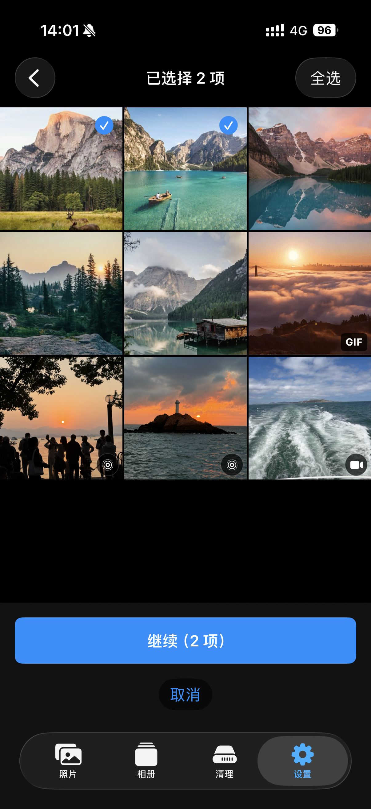

日常相册日常相簿Everyday Album日常用アルバム
使用日常相册密码打开。设备与设置支持时，也可以使用 Face ID 快速解锁。使用日常相簿密碼開啟。裝置與設定支援時，也能使用 Face ID 快速解鎖。Open it with the Everyday Album password, or use Face ID when supported and enabled.日常用アルバムのパスワードで開きます。対応する端末で有効にすると、Face IDでもすばやくロック解除できます。
定格定格FreezonFreezon
日常相册和私密相册使用不同密码。输入哪组密码，就进入对应相册。照片和视频保存在 iPhone 本机的加密存储中。 日常相簿與私密相簿使用不同密碼。輸入哪一組密碼，就會開啟對應的相簿。照片與影片儲存在 iPhone 本機的加密空間。 Everyday Album and Private Album use different passwords. The password you enter determines which album opens. Photos and videos stay in encrypted storage on your iPhone. 日常用アルバムとプライベートアルバムには、別々のパスワードを設定します。入力したパスワードに対応するアルバムが開き、写真とビデオはiPhone内の暗号化ストレージに保存されます。
日常相册与私密相册分别设置密码、安全恢复码、密钥、索引和媒体目录。两个相册都在本机加密，不把其中一个降为“普通相册”。日常相簿與私密相簿分別設定密碼、安全復原碼、金鑰、索引與媒體目錄。兩本相簿都會在本機加密，不會把其中一本降為「一般相簿」。Everyday Album and Private Album have separate passwords, Recovery Codes, keys, indexes, and media directories. Both are encrypted on device; neither is an unprotected album.日常用アルバムとプライベートアルバムには、それぞれ別のパスワード、リカバリーコード、暗号鍵、インデックス、メディア保存先があります。どちらも端末内で暗号化されます。
使用日常相册密码打开。设备与设置支持时，也可以使用 Face ID 快速解锁。使用日常相簿密碼開啟。裝置與設定支援時，也能使用 Face ID 快速解鎖。Open it with the Everyday Album password, or use Face ID when supported and enabled.日常用アルバムのパスワードで開きます。対応する端末で有効にすると、Face IDでもすばやくロック解除できます。
使用另一组密码进入。密码和安全恢复码与日常相册分别管理。使用另一組密碼進入。密碼與安全復原碼和日常相簿分開管理。Enter with a different password. Its password and Recovery Code are managed separately from the Everyday Album.別のパスワードで開きます。パスワードとリカバリーコードは、日常用アルバムとは別に管理されます。
两个相册分别建立加密数据库和媒体存储。照片、视频、密码和密钥不会自动保存到开发者服务器。兩本相簿分別建立加密資料庫與媒體儲存空間。照片、影片、密碼與金鑰不會自動儲存至開發者伺服器。Each album has its own encrypted database and media storage. Photos, videos, passwords, and keys are not automatically stored on developer servers.各アルバムに暗号化されたデータベースとメディア保存領域があります。写真、ビデオ、パスワード、暗号鍵が開発者サーバーへ自動保存されることはありません。
安全恢复码在本机验证。验证通过后，可以为对应相册设置新密码，或从该相册的加密备份恢复照片和视频。开发者无法读取或替你找回恢复码。安全復原碼會在本機驗證。驗證通過後，可為對應相簿設定新密碼，或從該相簿的加密備份復原照片與影片。開發者無法讀取或替你找回復原碼。The Recovery Code is verified on device. It can set a new password for the matching album or restore photos and videos from that album's encrypted backup. The developer cannot read or retrieve the code for you.リカバリーコードは端末内で検証されます。対応するアルバムのパスワードを再設定したり、そのアルバムの暗号化バックアップから写真とビデオを復元したりできます。開発者がコードを読み取ったり、代わりに復元したりすることはできません。
导入过程会显示检查、处理进度和结果。系统相册原片不会被默认删除；后续清理需要你再次确认。匯入過程會顯示檢查、處理進度與結果。「照片」中的原始檔不會預設刪除；後續清理需要你再次確認。Import shows preflight checks, progress, and results. Originals in Photos are not deleted by default; any later cleanup requires another confirmation.読み込み前の確認、処理の進捗、結果を確認できます。「写真」のオリジナルは初期設定では削除されず、後から整理する場合も再確認が必要です。
可以创建加密备份，保存到系统“文件”选择器中指定的位置，并从备份恢复。备份位置及其服务商政策由你选择。可以建立加密備份，儲存至系統「檔案」選擇器中指定的位置，並從備份復原。備份位置及其服務商政策由你選擇。Create an encrypted backup, save it to a location selected in Files, and restore from it. You choose the storage location and its provider.暗号化バックアップを作成し、「ファイル」で選んだ場所に保存して、そこから復元できます。保存先とファイルプロバイダはご自身で選択します。
照片浏览、导入、移动、原片清理、照片信息与加密备份。照片瀏覽、匯入、移動、原始檔清理、照片資訊與加密備份。Photo browsing, import, moving, original cleanup, photo information, and encrypted backup.写真の閲覧、読み込み、移動、オリジナルの整理、写真情報、暗号化バックアップ。


照片、视频或相册资料不会自动上传到开发者服务器。照片、影片或相簿資料不會自動上傳到開發者伺服器。Photos, videos, and album data are not automatically uploaded to developer servers.写真、ビデオ、アルバムデータを開発者サーバーへ自動送信しません。
备份位置和是否发送反馈，都由你在系统操作中确认。備份位置與是否傳送意見回饋，都由你在系統操作中確認。You choose the backup location and confirm whether feedback should be sent.バックアップ先を選び、フィードバックを送信するかどうかもご自身で決められます。
App 进入后台或检测到屏幕捕获状态时，会显示隐私遮罩。App 進入背景或偵測到螢幕擷取狀態時，會顯示隱私遮罩。A privacy shield covers sensitive content when the app enters the background or detects screen capture.Appがバックグラウンドに移るか画面収録を検出すると、プライバシー保護画面を表示します。
支持页包含密码、安全恢复码、备份、导入和诊断说明。支援頁包含密碼、安全復原碼、備份、匯入與診斷說明。Support covers passwords, Recovery Codes, backups, importing, and diagnostics.サポートページでは、パスワード、リカバリーコード、バックアップ、読み込み、診断情報について案内しています。